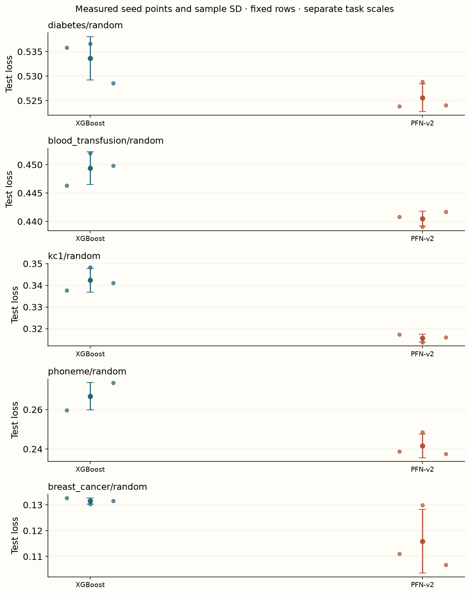

Year 2 · Quarter 3 · Lesson 064
Trace TabPFN v2 across both table axes
Understand the computation. Challenge the evidence. Produce a defensible result.
Core reading: 35–50 minutes. Lab: 45–75 minutes plus declared experiment time. This sequence builds the strong single-table baseline and information discipline required to test the relational thesis.
Retrieve before reading
Without notes: Does passing an attention-mask check establish Nature-v2 accuracy reproduction? Explain why, then recall a related failure mode from an older lesson.
A table-aware architecture changes what can be shared¶
Your goal is to explain the Nature-v2 computation and audit its accuracy/cost claim on a declared protocol. The primary source is Hollmann et al., Accurate predictions on small data with a tabular foundation model, especially Figure 1 and Methods. The paper reports strong downstream performance in the studied small-data regime, including comparisons with substantially tuned baselines. It does not establish that every released TabPFN version beats every tree recipe on every table.
Version identity is part of the experiment. A present-day default constructor can load a newer model than Nature v2. This lesson uses tabpfn==2.0.9 and a pinned v2 classifier checkpoint, not a moving default. Later checkpoints are separate arms with separate access, preprocessing, capacity and cost contracts.
Model architecture: alternate the two table axes¶
Instead of reducing each whole row immediately to one token as in v1, v2 constructs representations for feature cells or feature groups, plus a target representation. Think of a hidden tensor with axes [batch, rows, feature_groups_plus_target, hidden_width]. A feature-attention operation mixes feature representations within each row. A sample-attention operation mixes the corresponding feature-group representations across eligible context rows. Feed-forward transformations, normalization and residual paths accompany these operations in repeated blocks. The query's final target representation feeds the prediction head.
The released model also contains feature grouping, specialized preprocessing/encoders and identity features. Those details matter for duplicate rows, heterogeneous values and the precise symmetry of the system. “Table-aware” does not imply that every preprocessing-plus-ensemble configuration has exact arbitrary permutation invariance. Our reduced AxialPFN shows one scalar per feature, a separate unknown-target token and explicit feature/sample attention. It omits those released implementation details and does not load the official weights.
- INPUT ENCODERSfeature cells/groups + target tokenlocal hidden array [B,C+Q,F+1,D]
- FEATURE ATTENTIONreshape [B*N,F+1,D]each row mixes its own feature/target tokens
- SAMPLE ATTENTIONreshape [B*(F+1),N,D]each feature reads context rows only
- REPEAT + RESIDUALSfeature → sample → feed-forwardofficial IDs/grouping/encoders omitted locally
- OUTPUTquery target states [B,Q,D]classification head → probabilities
Trace a query feature through both axes¶
Suppose a query row has two feature tokens and one target token. During feature attention, the unknown-target representation can read both feature tokens in its own row. During sample attention, its target-position token can read the target-position representations of labeled context rows. After another feature step, information that traveled through different feature positions can interact again. This alternating route builds relationships that a single isolated scalar encoder cannot express.
The context/query mask applies on the sample axis, not indiscriminately on both axes. Context rows may read context rows; queries may read context, but query labels are absent and query rows must not become context keys in the reduced inductive path. A transpose bug can accidentally apply the row mask to features while still producing a tensor of plausible size. The lab tests query isolation and permutation behavior, and exposes the reshapes between [B*N,F,D] and [B*F,N,D].

Why caching and attention shape matter¶
Let C be context rows, Q query rows, N=C+Q and F the number of feature/target tokens. Ignoring constants, the reduced layer forms about N*F² feature-attention scores and F*N*C sample-attention scores per head. These are score-element counts, not measured peak memory. Fused attention, chunking, cached context states, hidden projections, feed-forward activations, layer count and precision all change actual resource use.
Because context states do not depend on new query rows, an implementation can cache reusable context computation. This can make repeated queries much cheaper than the first prediction. Measure cold model loading, context preparation and warm inference separately before translating a paper's timing into a deployment budget. A small query batch can reduce peak memory but add repeated work when caching is absent.
A matched local comparison, with unmatched paper scope¶
The author evidence comes from the common lesson-70 run: five real binary tasks, fixed splits, three inference/training seeds, one pretrained view, and reduced XGBoost and TabM recipes. Nature-v2 probabilities and the fitted competitors are scored on identical test rows. No four-hour tuning budget was run. The table therefore supports a local comparison and a recipe for a more expensive follow-up, not the original paper's seconds-versus-hours result.

Measured interpretation. These are the exact v2 and XGBoost predictions from the five-task checkpoint, reused for a focused historical-version comparison. They are not additional independent fits. No four-hour baseline tuning was performed.
Inspect the numerical evidence table
| mean | std | ||
|---|---|---|---|
| dataset | arm | ||
| blood_transfusion/random | TabPFN-v2 | 0.4405 | 0.0013 |
| XGBoost | 0.4494 | 0.0029 | |
| breast_cancer/random | TabPFN-v2 | 0.1159 | 0.0123 |
| XGBoost | 0.1315 | 0.0012 | |
| diabetes/random | TabPFN-v2 | 0.5256 | 0.0028 |
| XGBoost | 0.5336 | 0.0044 | |
| kc1/random | TabPFN-v2 | 0.3157 | 0.0018 |
| XGBoost | 0.3424 | 0.0055 | |
| phoneme/random | TabPFN-v2 | 0.2416 | 0.0060 |
| XGBoost | 0.2667 | 0.0069 |
Distinguish “same datasets and splits” from “equal compute” and from “strongest practical baseline.” One pretrained view, two tree candidates and offline foundation-model pretraining represent different resource choices. Report the measured budget transparently; do not impose a predetermined winner or relabel the faster run as the paper result.
Exit: reproduce a computation and audit a claim¶
Implement the sample-axis reshape and mask, demonstrate that adding an unrelated query leaves existing reduced-model predictions unchanged, and trace the target token to its head. Audit the official checkpoint predictions separately, reconstructing scores from saved probabilities and class order. Submit a cost ledger and a paragraph naming the paper datasets, tuning/search and hardware you have not reproduced.
The next-step runner increases local resources using the same visible baselines and pinned pretrained version. To reproduce the published tuning comparison, freeze the actual search spaces, time-budget accounting, validation protocol and complete dataset roster first. A closer preset is an experiment size, never proof of paper fidelity.
Run the companion lab
Student notebook · Prepared lab · Open in Colab
2 substantive code tasks feed the live experiment, followed by behavioral CHECKs and a written EXIT artifact. The notebook contains the explanation and portable figures so it is teachable independently.
Ask me follow-up questions about any operation, CHECK or conclusion you cannot defend. Paste the EXIT artifact and your explanation for review. Revisit the retrieval question tomorrow and again in a week, before reopening the reference.